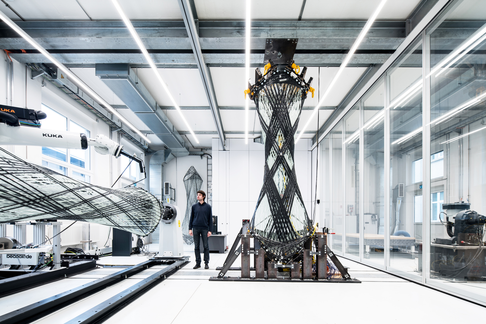

Inteligência Artificial
ARQUITETURA
- Melhorando a eficiência do projeto arquitetônico
Utilização de algoritmos de inteligência artificial para otimizar o processo de projeto arquitetônico, reduzindo o tempo necessário para desenvolver modelos e renderizações.
- QUAIS OS BENEFICIOS DA INTELIGENCIA ARTIFICIAL NA ARQUITETURA?
Preservação do patrimônio histórico
Projeto arquitetônico sustentável
Personalização e experiência do usuário
Simulação e visualização de projetos
Melhoria da segurança e eficiência dos edifícios
- Preservação do patrimônio histórico
Desenvolvimento de sistemas de IA que possam identificar e monitorar possíveis danos ou problemas em edifícios históricos, permitindo intervenções preventivas.
Implementação de algoritmos de IA que possam ajudar na reconstrução virtual de edifícios históricos, permitindo que as pessoas possam explorar e aprender sobre o patrimônio de forma interativa.
- EXEMPLOS;

Confira mais inf